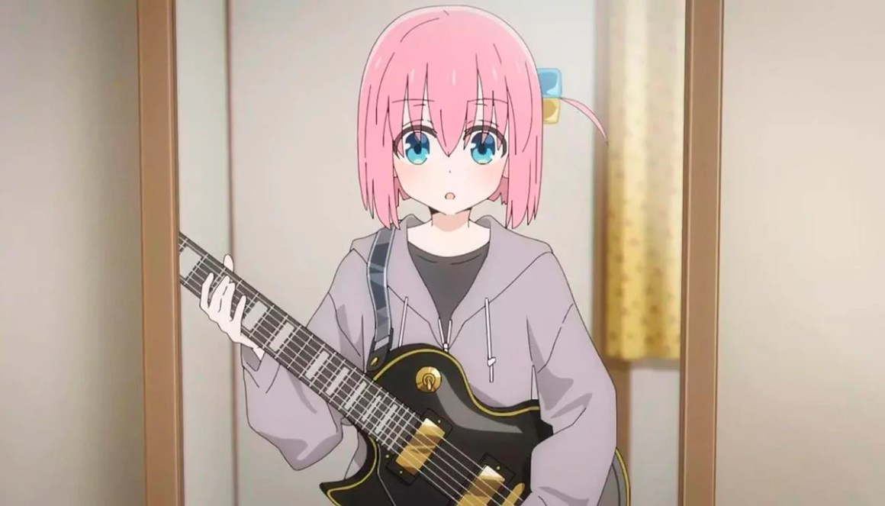
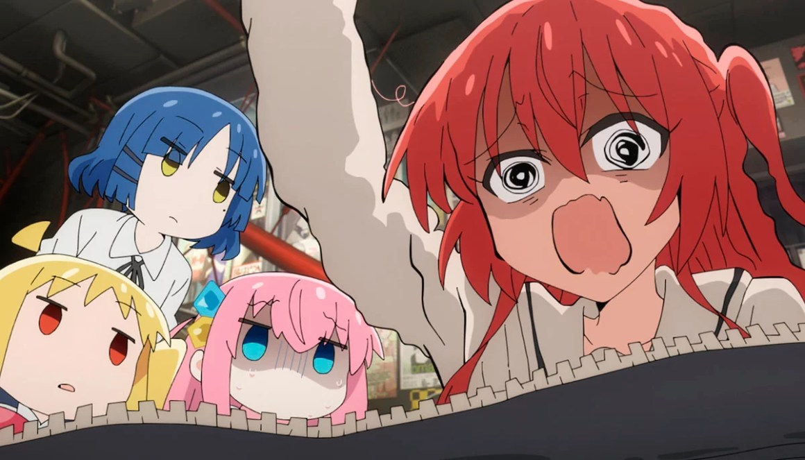
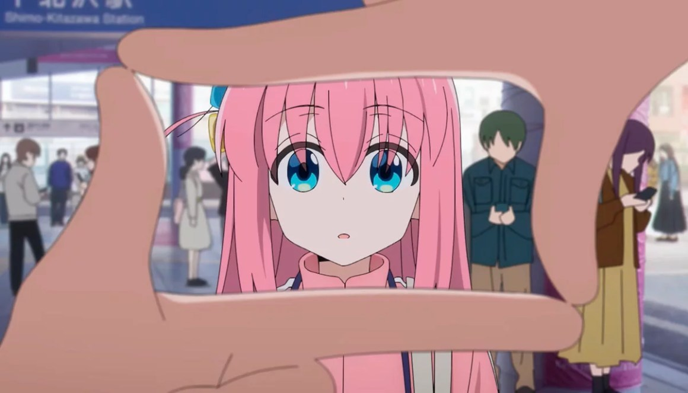
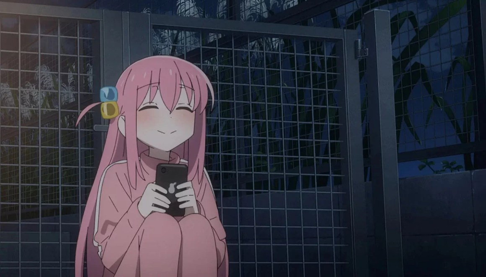

5 Progressão
Mesmo que seja uma progressão de forma sutil, assim como acontece em animes slice of life, os chamados animes de dia a dia (amo). Em animes shounen isso se chama “A jornada do Herói”. De alguma forma o protagonista vai evoluindo como personagem, cria-se camadas de personalidade, o torna interessante, o torna cada vez mais humano. Esse progresso é a base. Tente reparar nisso nos próximos animes que for assistir ^ ^
4 Particularidades
Ah sim, as particularidades. São as particularidades que faz o gancho, a mesma que faz, na maioria dos casos, despertar o interesse pelo anime…. Puts, quando vi um maluco careca que derrota qualquer inimigo com um soco eu quis saber o que era né… Eu aposto que você também foi fisgado várias vezes por particularidades aleatórias e inúteis tambem Criar atritos e mostrar a resolução ao longo dos episódios. Um inimigo muito forte aparece e o protagonista novamente precisa superar seus limite! Baita clichê, mas é exatamente assim. Eu diria que esse é um dos pontos que te faz ficar sedento pelo novo episódio, mesmo sabendo que é clichê. Mas vamos citar um exemplo de anime dia a dia, que é tão particular que as vezes não notamos conflitos. Sim, tem conflitos, como o pudim que sumiu! Puta merda, a gente tá em um anime de dia a dia, não precisamos de conflitos! O culpado que se pronuncie agora!
2 Fotografia, direção, trilha sonora, dublagem… o básico
Talvez esse seja o primeiro contato de muitos com o anime em particular. Quem nunca pediu link do anime só porque viu um rabão? Talvez uma cena bem criativa envolvendo peitos? Aquela música chiclete de garotinhas cantando? Ou a dublagem fofa da imouto… Estou de zueira… Ou será que não? Enfim. Mas o link que é bom nada… Mas tirando essa parte do fetiche, temos exemplos de obras de artes animadas, algo que enche os olhos, e Demon Slayer é um dos grandes exemplos. A obra foi pra outro patamar graças a animação, direção, música… Que anime incrível!
1 Motivação
A maioria dos animes existe uma motivação base e ao longo do caminho aparece outras motivações que deixa a jornada ainda mais interessante. E lembrando, a motivação central continua lá, sendo o coração de tudo. Mas o principal de tudo, a resolução dessa motivação NÃO pode ser entregue de bandeja. Vamos citar exemplo de One Piece, que nos apresenta essa motivação logo de cara, a busca do grande tesouro, o One Piece!… Isso é tão verdade, que o próprio Luffy teve a oportunidade de descobrir o que era o One Piece na metade da jornada. Ele não quis saber e explicou que ele não teria motivos pra continuar a jornada se descobrisse… A motivação move montanhas!!!